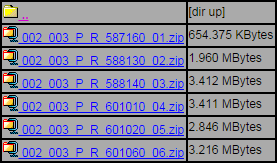

2 marzo, 2016 | di Andrea Borruso
Da novembre è attivo Transit.land, un progetto sponsorizzato da Mapzen che ha come obiettivo quello di creare un catalogo “integrato” di dati sulle reti di trasporto di tutto il mondo.
Nasce da una sperimentazione fatta a San Francisco, città con più di 30 agenzie di trasporto pubblico, un numero crescente di servizi privati, il carpooling, ecc.. L’obiettivo era proprio quello di mettere a rete tutti questi dati e catalogare le informazioni su autobus, treni, tram, traghetti anche le funivie e renderli interrogabili come se fossero in un unico database.

Tutto talmente bello, che dopo la sperimentazione “locale” è partito il progetto globale, con l’obiettivo di mettere a catalogo file GTFS da tutto il mondo.
La scelta del formato file di input è caduta proprio su General Transit Feed Specification, oggi lo standard di fatto per questo tipo di dati, usato da Google Maps, Microsoft Bing Maps, Apple Maps, ecc. Molti operatori di servizi di trasporto pubblicano i dati in questo formato, e molti innovatori civici hanno creato questi file per le loro città.
Ma si tratta di risorse che per lo più fluttuano nel web spesso come elementi separati. Transitlad, ancora invero in uno stato iniziale, mira a diventare un centro di gravità per questi dataset, completamente aperto in termini di licenza di software e di dati.
Contribuire
Uno dei modi per contribuire al progetto, lanciato da poco, è quello di inviare una nuova sorgente di dati GTFS, in modo che possa essere integrata al catalogo generale, che oggi comprende più di 70 risorse.
Farlo è molto semplice: a partire da questo wizard dove viene richiesto essenzialmente di inserire l’URL della sorgente dati, il tipo di licenza con cui sono pubblicati ed alcune informazioni anagrafiche del mittente.
Il dataset, a quel punto, viene sottoposto ad una verifica e dopo qualche giorno verrà inserito in catalogo.
Un po’ per testare l’oggetto, un po’ perché mi sembra un gran bella idea – non nuova, ma mai pienamente realizzata – mi sono messo all’opera e nel catalogo Trantit.land oggi sono in eleno le “nostre”:
Le API e la “vita” dei dati
I dati, come dice spesso chi fa didattica su questi temi, sono come la farina e l’acqua: materia prima con cui c’è chi farà torte e chi “busiate” (io non ho dubbi).

A Transit.land hanno impastato tutto e invece hanno tirato fuori delle API, rendendo l’interrogazione del loro catalogo un processo semplice, comodo e che potenzialmente potrà produrre diversi effetti a cascata.
Qualche esempio di query:
- Tutte le fermate di un operatore
- Tutte le rotte di un operatore
- Tutte le fermate nel raggio di 500 metri da un punto di coordinate note
- Tutte le fermate comprese in un rettangolo di coordinate note
- Tutte le fermate in cui un certo tag è valorizzato (in questo caso ingresso con sedia a rotelle) in una certa area
- Tutte le fermate che ricadono nella via che ha come OSM ID il valore 395047052 (Corso Vittorio Emanuele a Napoli)
- Tutti i dati su una determinata rotta
- Tutte le rotte comprese in un rettangolo di coordinate note
- Tutti i dati di un oggetto con un determinato Onestop ID
Ma sono solo alcuni esempi e le chiamate disponibili sono molte di più:
https://github.com/transitland/transitland-datastore#api-endpoints
I risultati sono esposti con una paginazione di 50 in 50.
Open Data Day
Sabato 5 marzo 2016 è l’Open Data Day, e una delle sedi sarà la città di Napoli.
Il bello è che sino a 15 giorni fa i dati sui trasporti di questo comune non erano disponibili ed oggi, solo per il fatto di essere stati pubblicati in formato aperto e documentato sono pure accessibili tramite API. Questo è stato possibile grazie anche a Ilaria Vitellio che si è spesa personalmente con la pubblica amministrazione locale, che ha risposto prontamente ed ha pubblicato questi dati.
In bocca al lupo allora a Ilaria ed a tutti i presenti a Napoli, che avranno a disposizione nuova farina e nuovi mattarelli.
In chiusura una nota personale. Anche i dati sulla mia città, Palermo, sono presenti nel catalogo e quindi accessibili via API, ma purtroppo valgono per fare qualche demo di qualità.
Si tratta di dati aggiornati a fine dicembre, in cui non è contemplata la nuova rete tranviaria e tutti i grossi cambiamenti che la rete ha subito tra fine 2015 e inizio 2016.
E’ un fatto grave, specie per una città ricca di turisti come Palermo e con grossi problemi di traffico autoveicolare, che non siano ancora disponibili dati aggiornati sui trasporti pubblici.
Ne riparlerò in un altro post.
Posted in Strumenti | 5 Comments »
27 ottobre, 2014 | di Andrea Borruso
Preso dalle tante sollecitazioni arrivate dall’emergenza maltempo a Genova, Parma e Alessandria, ho pensato di iniziare a raccogliere dati e informazioni legate al Rischio idrogeologico in terra di Sicilia.
Ho constatato una barriera di accesso alle informazioni sui siti ufficiali della Pubblica Amministrazione, e anche le notizie reperibili attraverso articoli giornalistici, non riescono a dare una risposta chiara ad una domanda semplice: sono in pericolo?
Fornire gli strumenti per dare una risposta, significa fare una buona informazione civica, un obiettivo alto e stimolante per chi gestisce la cosa pubblica, ma che alle volte non è nemmeno abbozzato.
Per valutare il mio rischio devo rispondere almeno ad altre due domande:
- vivo vicino ad un rischio naturale?
- se sì, quanto è elevato?
I contenuti utili a definire la cosa sono disponibili, ma non permettono di passare dalla propria e personale conoscenza del territorio alla sua rappresentazione istituzionale.
Ho concentrato la mia ricerca sul rischio idrogeologico e sono “caduto” in questo articolo del Giornale di Sicilia: nella mia regione ci sarebbero 22 mila aree a rischio.
Il progetto di riferimento è il PAI (Piano di Assetto Idrogeologico), “lo strumento conoscitivo, normativo e tecnico-operativo mediante il quale sono pianificate e programmate le azioni, gli interventi e le norme d’uso riguardanti la difesa dal rischio idrogeologico del territorio siciliano“.
Il sito web ufficiale è http://www.sitr.regione.sicilia.it/pai/, tenuto aggiornato nel tempo e ricco di pagine contenenti numerosi allegati (essenzialmente file PDF, compressi in file .zip). Mi aiuta a rispondere alle questioni poste sopra?
Non credo, salvo non conoscere ad esempio i nomi dei bacini idrografici locali, cosa ignota al 99 % delle persone che frequento. Ma anche sapendo il nome del bacino – ad esempio “Torrente Saponara, Area Territoriale tra i bacini T.te Saponara e F.ra Niceto” – ci si trova davanti a barriere di comunicazione come quella dell’immagine di sotto.

Qual è il significato del nome di questi file? Ne apro qualcuno, guardo un po’ dentro e cerco di capire? Non credo possa essere così, e sicuramente non può essere solo così.
Dati come questi devono essere pubblicati anche in maniera immediatamente comprensibile e leggibile da tutti: me, mia mamma, un giornalista, un pittore, un tecnico comunale, mio nipote il grande, il vicino di casa e financo da Gerlando.
Solo come esempio, per quell’insieme di persone che ha accesso al web, una semplice mappa come questa dà un’informazione che è subito comprensibile ad una platea vasta: dovo sono le aree a rischio frana in Sicilia, e qual è il grado di rischio.

Non scrivo tutto questo per fare una critica al PAI, è un progetto che non conosco e che immagino essere di qualità.
La barriera non è la presenza/assenza delle informazioni ma il loro scarso grado di utilizzabilità civica. Sarebbe auspicabile una collaborazione con la cittadinanza per trovare le modalità per superarla. Il risultato può essere proprio una mappa facilmente comprensibile da tutti.
Si tratta di un problema molto più semplice di quello del rischio idrogeologico, cionondimeno affrontarlo e risolverlo sarebbe una scelta politica con benefici a catena per tutti.
Invito la Regione Siciliana a costruire sul tema del rischio idrogeologico (e sul rischio in generale) una strategia di comunicazione e di informazione civica di qualità, senza barriere e ad ampio spettro.
Ad aprire di più e meglio i dati relativi, in modo che possano essere realizzate analisi e rappresentazioni del tema che oggi nemmeno immaginiamo. La carta interattiva di sopra, è stata implementata grazie a 2 servizi aperti: quello messo a disposizione dal Geoportale Regione Siciliana (special thanks ad Agostino) e l’ortofoto RealVista.
Una delle conseguenze dell’apertura dei dati è proprio quella di creare le precondizioni per raccontare meglio il proprio il territorio, in ciò per cui brilla e in ciò per cui è a rischio.
E io di queste storie vorrei poterne leggere tante.
NdR: questo articolo è pubblicato anche sul blog di Open Data Sicilia.
Posted in Dati | 3 Comments »
7 aprile, 2014 | di Gerlando Gibilaro
Il 28, 29, 30 di marzo si è tenuto a Bologna il raduno annuale della comunità di Spaghetti Open Data: #SOD14.
Insieme ad Andrea Borruso e Giulio Di Chiara, abbiamo deciso di partecipare spinti dalla volontà di confrontarci con una delle più importanti realtà italiane in tema di dati aperti.
Ma soprattutto abbiamo voluto esserci per completare un percorso formativo che, a partire dalla realizzazione delle Linee Guida scritte per il Comune di Palermo (documento utilizzato anche dal Comune di Matera), ci ha visti coinvolti nelle problematiche inerenti l’apertura dei dati delle PP.AA.
Ricordo ancora quando, appena qualche mese fa (agli inizi di gennaio di quest’anno), ci siamo guardati e ci siamo detti: “Però, non sarebbe male partecipare tutti e tre a SOD14“, con in faccia, tuttavia, un bel po’ di perplessità sulla fattibilità dovuta al far combaciare possibilità ed impegni.
Poi, una volta staccato il biglietto e prenotato il B&B (a proposito: grazie Giulio), tutto è diventato, come per miracolo, reale e concreto.
Queste notazioni possono sembrare cose futili, ma credetemi, non sono affatto scontate per noi (parlo a nome di tutti e tre perché so di potermelo permettere) isolani e professionisti in una realtà ancor più complicata di quello che si può immaginare.
Il raduno, come detto, si è tenuto in quella splendida cornice che è la città di Bologna (come l’anno passato).
Per la verità diverse altre città (tra cui Palermo, Matera, Napoli), avevano presentato la candidatura ad ospitare l’evento.
Ritengo che, magari per gli eventi futuri, sia importante fare un atto di coraggio e decidere di portare questi eventi laddove c’ è maggiore necessità di implementare la cultura della partecipazione e dove le Pubbliche Amministrazioni sono, per così dire, più restie a consentire il libero accesso ai dati.
Le giornate di #SOD14
Venerdì 28 è stata tenuta una conferenza in cui i partecipanti si sono aggiornati a vicenda sulle novità principali nel mondo degli open data emerse nell’ultimo anno.
La mattina è stata di plenaria, mentre il pomeriggio si sono tenuti un barcamp ed il SODcamp.
Sabato 29 vi sono stati alcuni civic hackathon: come recita la pagina di presentazione:
“produrremo insieme qualcosa di concreto. A differenza degli hackathon “normali”, il civic hackathon di SOD14 non si concentra solo sulla produzione di software, ma anche su analisi di leggi e normative o azioni di monitoraggio civico”.
Domenica 30 sono stati tenuti due mini-corsi (ritengo pratico-divulgativi essendo accessibili a molti): uno riguardava la visualizzazione dei dati, l’altro il web semantico e i linked open data.
Io non ho partecipato, in quanto, dopo tanti dati, mi sono dato ad una passeggiata turistica per le vie della città, prima di prendere il volo per Palermo. Per cui nulla posso dire al riguardo.
Il raduno generale ed i barcamp
Il primo impatto, lo dico subito, è stato molto eccitante ed euforico. Incontrare persone conosciute solamente tramite web, potersi guardare negli occhi, scoprire i volti reali delle persone dietro quelle idee e quei progetti per i quali mi sono entusiasmato, poter condividere in libertà ed informalmente, anche con il primo che passava, la propria esperienza, è stato un momento che si può riassumere in una immagine: così dovrebbero essere le Scuole e le Università in Italia!
Sarà sciocco, ma mi sono sentito come un ventenne all’Università di Stanford… o se Simone Cortesi preferisce: come un ventenne al
Queen’s College dell’Università di Oxford.
In verità non so come si sente uno studente in Università simili, ma penso che dovrebbe sentirsi proprio come mi sentivo io.
Insomma: “giro, vedo gente, mi muovo, conosco, faccio delle cose”.
Non è mia intenzione elencare qui di seguito l’intera evoluzione della mattinata, voglio solo fare qualche accenno ai momenti che adesso mi vengono così, di getto.
La presentazione di Wikidata
Come recita la pagina principale che descrive il progetto (mi raccomando fate click sui collegamenti ipertestuali):
Wikidata è una base di conoscenza libera che può essere letta e modificata allo stesso modo da umani e macchine. Fornendo un accesso centralizzato alla gestione di dati strutturati – come collegamenti interwiki e informazioni statistiche – rappresenta per i dati ciò che Wikimedia Commons è per i file multimediali. Wikidata contiene dati in tutte le lingue per le quali esistono progetti Wikimedia. Per saperne di più, è disponibile una pagina introduttiva che ne approfondisce le caratteristiche e il funzionamento.
Adam Shorland ha presentato brillantemente questo progetto: qui due presentazioni: una breve ed una lunga.
Open by default? Perché a volte i dati pubblici si riescono ad aprire e altre volte no.
Sono stati effettuati alcuni interventi programmati, moderati da Patrizia Saggini, sul tema sopra emarginato: ISTAT (Vincenzo Patruno), Regione Emilia-Romagna (Dimitri Tartari), Lombardia (Daniele Crespi), Provincia Autonoma di Trento (Lorenzino Vaccari), Palermo (Andrea Borruso), Bologna (Michele D’Alena), Ravenna (Morena Brandi)
Perché ho messo in grassetto Andrera Borruso?

Massimo Zotti – Andrea Borruso – Simone Cortesi
Perché è un mio amico?
No, anche se “I am also a friend of @aborruso”.
Devo, invece, segnalare un piccolo fraintendimento nella comunicazione sulla partecipazione di Palermo.
Su Corriere Innovazione — rivista del Corriere della Sera online — è stato indicato che:
“(…) seguiranno un dibattito con rappresentanti di enti e amministrazioni pubbliche (Istat, Provincia autonomia di Trento, Regioni Emilia-Romagna e Lombardia, Comuni di Palermo, Bologna e Ravenna), (…)”
Vorrei precisare che il Comune di Palermo, purtroppo, non ha partecipato.
Andrea Borruso (sul palco e poi il giorno seguente nell’Hackaton: Gli OpenData per liberare l’Energia Potenziale dei beni confiscati alle mafie), Giulio Di Chiara ed il sottoscritto (in platea e nelle sessioni pomeridiane), hanno partecipato solo come privati cittadini, o se preferite come (anonimi) professionisti.
Potrebbe sembrare lo spunto per una polemica. Credetemi, non lo è.
Si tratta di una evidenza che non può non essere sottolineata a fronte di un’Amministrazione Comunale (Palermo) che, sebbene sollecitata, coadiuvata e pressata costantemente dai sottoscritti e da pochi altri attivisti, si è dimostrata non sufficientemente attiva e sensibile sulle politiche di partecipazione ed apertura dei dati.
All’Open Data Day che in pochissimo tempo (e senza alcuna reale risorsa) è stato realizzato a Palermo, sono state evidenziate inadempienze e lacune sulle quali non è il caso in questa sede dilungarsi.
Devo rilevare, come riassunto in questo articolo del 24 febbraio ultimo scorso, che il Comune di Palermo è ancora pressoché fermo in ordine alla scadenze temporali relative all’attuazione delle Linee Guida.
Ad ogni modo, su tali problematicità è stato condotto l’intervento di Andrea Borruso.
Non poche perplessità, infatti, ha suscitato la comunicazione della circostanza che a fronte del contest: “ApPalermo Palermo Open Data Contest” con un montepremi di 37.000,00 euro (che ha fatto brillare gli occhi a molti dei presenti in sala), ancora sono pochissimi, pressoché nulli, i data-set in open-data pubblicati dal Comune realmente e proficuamente utilizzabili.
Subito dopo, per l’appunto, vi è stata la premiazione dei vincitori del contest lanciato dal Comune di Ravenna, il cui ammontare totale complessivo lordo dei premi era di 3.000,00 euro.
E’ stato evidenziato come l’Amministrazione di Ravenna abbia correttamente e preliminarmente provveduto ad adottare specifiche e mirate azioni, come, ad esempio, il censimento dei dati in proprio possesso.
Un’ultima riflessione mi sia consentita sul punto: più volte mi è stato detto (anche da Dirigenti Comunali, ma non solo) che, sintetizzo: è facile effettuare questo tipo di politiche in piccoli Comuni.
Voglio rispondere, come sempre ho fatto: a chi dobbiamo ispirarci allora? Alle grandi città come Londra, New York o, in Italia, Torino? O forse mi direte che quelle realtà sono troppo grandi ed organizzate?
Metodologie e buone prassi, credo, che debbano prescindere dall’entità urbanistica.
L’apertura dei dati, aldilà della meritoria attività dei singoli attivisti, rimane una prerogativa politica.
Si dovrà ancora riflettere su come adottare delle uniformi strategie nazionali e, soprattutto, sui rimedi concreti ed effettivi contro la disapplicazione, o l’applicazione spesso di facciata da parte della P.A., della normativa di settore.
Credo che questi temi dovranno essere il campo di battaglia su cui confrontarsi al fine di trovare un punto di incontro tra discrezionalità amministrativa ed obblighi di adeguamento.
Open Bilanci
Di pomeriggio ho seguito la sessione tenuta dall’ottimo Ettore Di Cesare su Open Bilanci.
Posso dire che il solo partecipare a questo incontro è valso di gran lunga l’acquisto del biglietto aereo per Bologna.
Dagli autori del progetto Openpolis, Open Bilanci “ha l’obiettivo di “aprire i bilanci” delle amministrazioni dei comuni italiani e renderli accessibili, comprensibili e confrontabili dai cittadini”.
Il progetto dovrebbe prendere il via a maggio (data presuntiva di rilascio) e si basa sui dati certificati dei bilanci preventivi e consuntivi che i comuni d’Italia mandano annualmente al Ministero dell’Interno (reperibili anche su Finanza Locale).
I dati (che saranno pubblicati in formato json e csv) saranno fruibili anche dal comune cittadino grazie ad una interfaccia che permetterà la visualizzazione, la consultazione, la comparazione (temporale e tra Comuni) dei bilanci di spesa dei Comuni Italiani. In più potrà essere effettuata una analisi dei bilanci comparati con l’attività delle singole amministrazione che si sono succedute nel tempo.
Le criticità del progetto cui sono andati incontro i realizzatori sono costituite dal fatto che su alcune tematiche (ad esempio rifiuti, mobilità) i Comuni si comportano in modo differente a causa della presenza delle Aziende partecipate o controllate.
IMHO
Gli aspetti positivi ed entusiasmanti di #SOD14 sono stati davvero tanti.
Mi rendo perfettamente conto anche dell’importanza di creare comunità attraverso l’entusiasmo di alcune pratiche un po’ da geek (passatemi il termine).
Francamente — ma questa è solo la mia opinione —non mi è piaciuto l’invio compulsivo di tweet (un po’ incentivato dalla proiezione dei predetti sui due maxi-schermi).
Ad ogni modo, ho preso la faccenda come un momento, diciamo, di euforia goliardica, anche se un sottile confine separa il clima goliardico, da operazioni un po’ di immagine come l’intento di entrare nei trend topic.
Non sono rimasto, invece, del tutto convinto della sessione Law4OpenData UnHackathon, il cui tema da programma era:
Fare l’analisi delle norme che non facilitano l’effettiva applicazione concreta del paradigma Open Data o che per loro complessità non semplificano il processo di liberazione dei dati. Il goal sarà quello di fare proposte concrete al nuovo ministro della Pubblica Amministrazione e fornire una tabella sinottica e grafica delle emergenti proposte sotto forma di infografica. Poiché da recenti statistiche i documenti normativi sono il secondo dataset più ambio dagli italiani, si analizzeranno anche insieme alcuni documenti giuridici (e.g. delibere comunali, piani regolatori, piani di rischio) per verificare insieme se possono essere liberati e come, applicando così il metodo preventivo dell’analisi giuridica al dataset.
Più in particolare, nella mattinata, è stata analizzata la normativa in tema di pubblicazione dei turni e degli orari delle farmacie di un Comune, prendendo le mosse da un caso concreto. L’obiettivo era quello di evidenziare punti deboli e prospettive.
Non voglio dilungarmi sul punto, tuttavia sono convinto — ma anche questa è solo una mia opinione — che la sessione poteva essere organizzata meglio, in modo più consapevole ed approfondito.
Non so che fine farà il risultato del lavoro (che, comunque, dovrà essere ulteriormente verificato), non essendo stata realizzata alcuna piattaforma collaborativa sul tema. Magari per le prossime volte sarebbe importante comunicare direttamente ai partecipanti il cuore delle problematiche da affrontare in modo da poter giungere più consapevolmente ai goals programmati.
Ad ogni modo la metodologia mi ha molto coinvolto ed è mia intenzione, nei prossimi mesi, provare ad organizzare nel mio campo professionale qualcosa di simile, soprattutto con l’ausilio di varie competenze professionali esterne.
Questo articolo
Voglio dedicare questo articolo a Lorenzo Perone ed alla sua splendida famiglia, non solo per l’accoglienza ed il caldo affetto che ci hanno dimostrato, (mi è sembrato quasi un terrone, io lo posso dire, voi no).
Ma soprattutto voglio ringraziarlo per le lasagne di sua suocera.
Lorenzo (come me qualche volta) scrive su TANTO , il bar dietro al router, dove ci siamo incontrati.
@lorenzo_perone is my friend
Post Scriptum
A proposito di dati: al rientro a Palermo abbiamo scoperto casualmente (all’andata ancora non era presente tale servizio) che la controllata (al 100%) del Comune di Palermo Amat Palermo S.p.A. (autobus), ha rilasciato alla statunitense società Google Inc. i dati sorgenti del trasporto pubblico locale di Palermo (come per altro hanno fatto molte altre città italiane).
Qui l’articolo scritto da Giulio Di Chiara.
Nulla di male, anche se non vi è stato alcuna comunicazione ufficiale o ufficiosa.
Abbiamo già chiesto (per primo Simone Cortesi con una PEC diretta al Sindaco di Palermo) che che questi dati, in forma sorgente, vengano forniti, con le stesse modalità, alla comunità italiana opendata. L’azione di rilascio in open data sarebbe infatti in grado di dare un contributo all’innovazione a Palermo, soprattutto come base per la creazione di servizi alternativi.
Posted in Eventi | No Comments »
3 marzo, 2014 | di Andrea Borruso
50 centimentri sono abbastanza per un post a risoluzione schermo (largo circa 500 px), più o meno la lunghezza del passo di un uomo, il diametro di un canestro di basket, poco più del lato lungo di un foglio A3. Tutto è relativo.
Se si tratta della risoluzione di ortofoto è sicuramente un piccolo grande numero, che consente di osservare il territorio con un buon dettaglio, di supervisionare virtualmente un’area prima di fare un volo con un drone, di derivare delle informazioni vettoriali, di guardare con occhio languido la cala in cui si andava in vacanza da bambini, di verificare la modifica di un versante di frana nel tempo. E tanto, tanto altro di più. Ma le dimensioni non sono tutto.
e-GEOS e il Ministero dell’Ambiente e della Tutela del Territorio e del Mare e l’Agenzia per le Erogazioni in Agricoltura (AGEA) hanno rilasciato da pochi giorni proprio delle ortofoto a 50 cm., accessibili in WMS (WMTS quelle di e-GEOS). Non si tratta di riprese con presa obliqua e sono accessibili in diversi sistemi di coordinate; due elementi “classici” per questo tipo di dataset, di cui trovo importante rimarcare la differenza con i layer cartografici dei grossi provider web. Ma la “tecnica” non è tutto.
Il dataset di e-GEOS, così come annunciato nel corso della Conferenza OpenGeoData “Istruzioni per il RI-uso”, è rilasciato con una licenza aperta; anzi per la precisione con due tipi di licenze (qui e qui). Questo tipo di accesso ai dati, li trasforma subito in ingredienti di base, con cui ognuno potrà realizzare la propria ricetta. E’ una gran bella cosa.
Del dato AGEA non ho invece trovato ((ma sono certo che ci saranno) i termini di utilizzo.
Per puro diletto ho realizzato un “confronto all’americana” tra i due dataset; lo trovate qui. Noterete che il layer AGEA è molto più lento a caricarsi, ma non si tratta di un dato sottoposto a tile caching come quello di e-GEOS.
Sotto la mappa altre informazioni utili sui dati, comprese le “Capabilities” dei rispettivi servizi WMS.

Posted in Dati | 11 Comments »